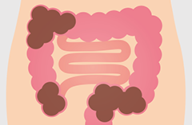
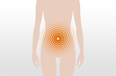

そのお腹の不快感、
腸が発するカラダの注意信号
かもしれません。
お腹が張る、ガスがたまる、といったお腹の不快感は、腸内環境低下のサイン。
腸内環境の悪化は、カラダ全体に様々な悪影響を及ぼします。
腸内環境について正しく知り、
もっとスッキリな毎日を。
腸の専門医
大竹真一郎先生による
アドバイス
-
実は意外に多い“隠れ便秘”。
- 
- 毎日便通がある。一日に何度も便通がある。お腹がゆるい。
一見、便秘のイメージとは異なる状態でも、実は腸に便が残っていることがあり、その場合消化器内科医は便秘と診断します。
自分は便秘ではない、と思い込んでいる人は実は意外に多いのです。
-
女性ホルモンとお腹の
不快感との関わり。- 
- 生理前は便秘に悩み、生理になると解消する。そんなご経験をお持ちではありませんか？これ、実は女性ホルモンである黄体ホルモンの影響によるもの。血管に水を引き込む性質を持っているため、生理前は体内の水分バランスが変化して便が固くなってしまうのです。便秘が女性特有の悩みといわれる一因には、リズムや年齢で変化する女性ホルモンとの関わりもあるのです。
-
ストレスと悪玉菌の
悪循環解消を。
- 腸内環境の悪化は悪玉菌の増加につながります。
この悪玉菌、血流に乗って肌トラブルを引き起こすばかりか、ストレスを感じやすくなる弊害の報告も。
悪玉菌が増え、ストレスが強まることで、さらに悪玉菌が増える。
その悪循環を断つためには、腸内環境の改善が必要です。
-
不快感対策は、
まず腸活から。- 腸は運動することで活動します。腸が不活発で調子が悪いと、お腹周りはひんやり冷えてしまいます。軽い運動で腸を活動させましょう。おすすめは一日8000歩、早歩きで約60分のウォーキング。階段を見つけたら「お腹の調子が良くなる、ラッキー！」とポジティブな意識で階段を使ってください。また、食べ過ぎによる腸内環境の乱れには、善玉菌のバランスを整えるために食物繊維や発酵食品を意識的に摂ることが大切です。
腸内環境を整えることは、
カラダ全体の調子が整うことにつながります。
腸内環境を改善する運動や食習慣を
意識的に続けて、
毎日をスッキリ過ごしましょう。